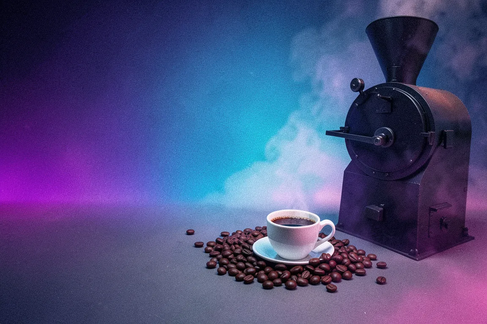

Soft, blurred mesh gradients in 3 to 5 hues behind clean sans-serif type, with glowing edges and grain. It came from fintech and AI product pages and replaced the flat hero.

Core thesis
Colour is atmosphere: a blurred field of light makes a product feel alive without any picture of it.
Design principles
Build the hero ground from 3 to 5 radial colour blobs of 400px to 900px, blurred by 80px to 160px, on a base of #0A0A14 or white.
Pick hues that sit within 90° to 150° on the colour wheel and keep saturation of 60% to 90%.
Add a grain overlay of 3% to 6% opacity at 1px to 2px noise to prevent banding.
Set headings in a clean sans at 56px to 96px, weight 500 to 600, and keep body text white at 80% opacity or ink on pale tints.
Outline cards with a 1px gradient border (white at 20% to 0%) and fill with white at 4% to 8%.
Animate the blobs: drift 40px to 120px over 12s to 30s, with ease-in-out and an alternate loop.
Limit the glow: one glow behind the hero object and one behind the primary button, each blur 24px to 60px at 30% to 50% opacity.
Anti-patterns
Flat solid hero backgrounds
Hard-edged linear gradients with visible bands
More than 5 hues in one field
Thick black borders and hard shadows
Gradient text for every heading
Fast, flashing gradient animation under 4s per loop